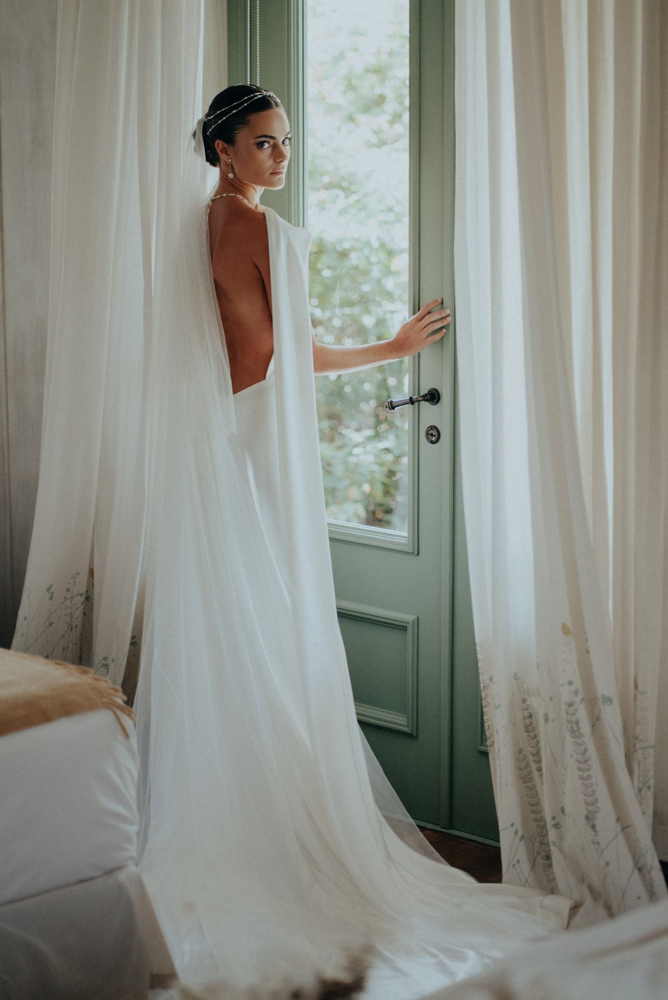

Piezas a medida
Una pieza pensada para tu día, hecha a mano en Córdoba.
Para novias, madrinas, testigos e invitadas. Elegís una pieza de nuestra colección, la ajustamos a tu gusto o diseñamos juntas la que imaginaste.
- 1Nos escribís y nos contás tu fecha y qué estás buscando.
- 2Te mandamos cómo trabajamos, con opciones, tiempos y valores.
- 3Elegís tu pieza y la hacemos para vos.
Respondemos de lunes a viernes de 10 a 16 h.
